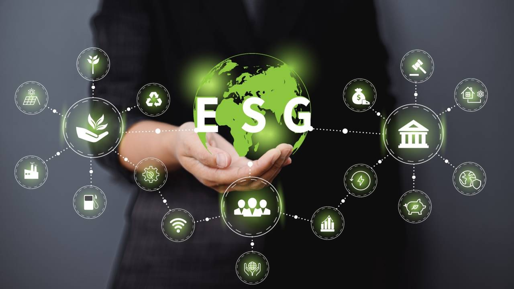
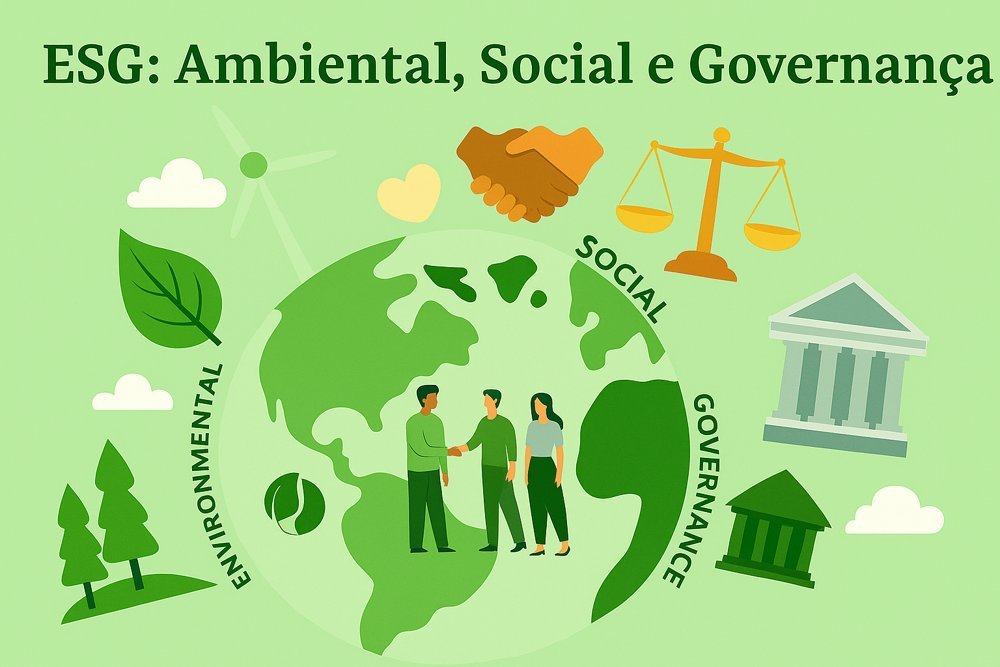
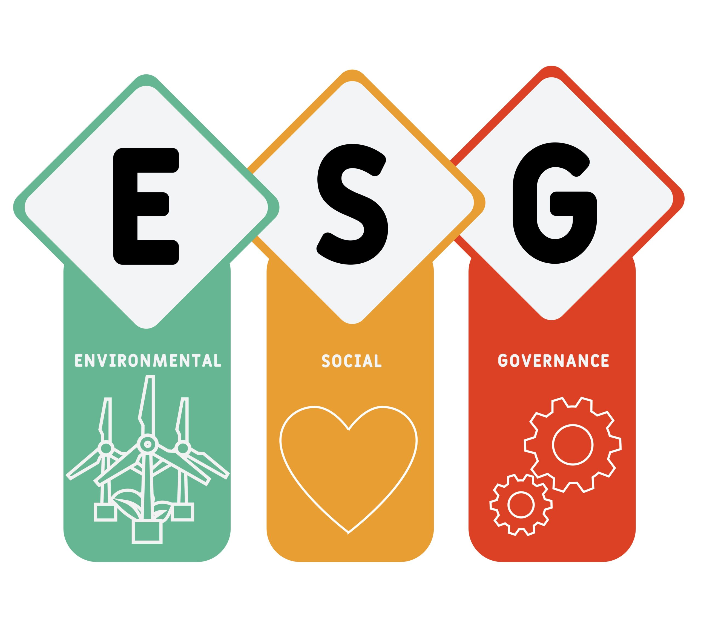
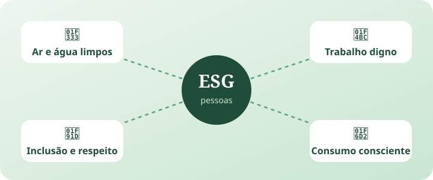
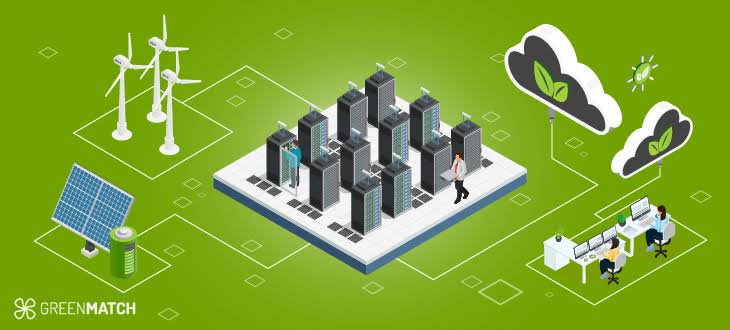
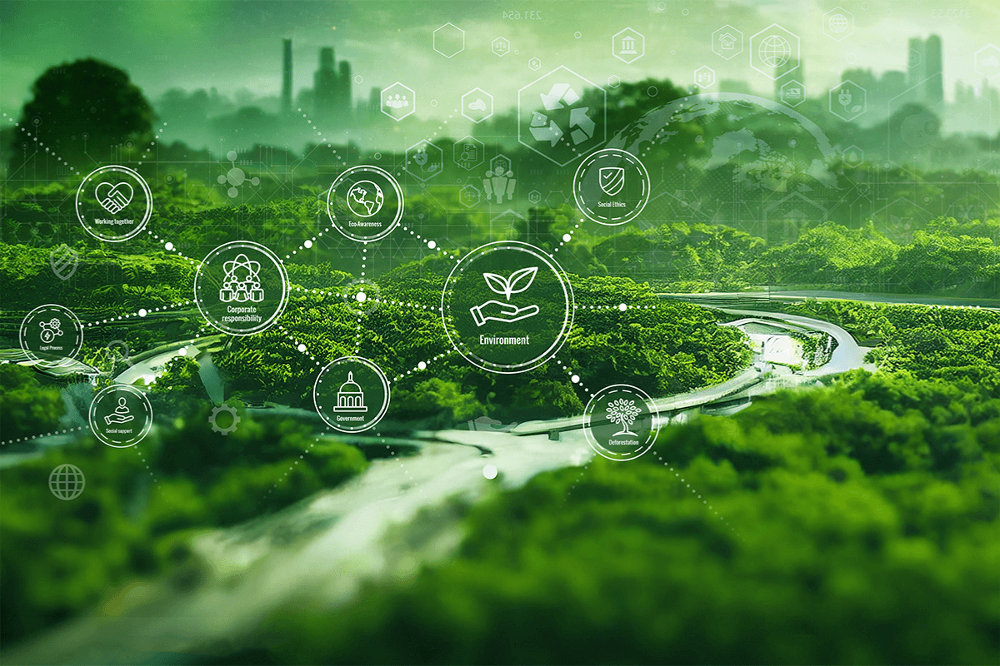

ESG: Ambiental, Social e Governança
Introdução
A sustentabilidade virou prioridade para as empresas, e o ESG (Ambiental, Social e Governança) é hoje um dos principais indicadores de ética e responsabilidade no Brasil e no mundo.
Entre 2025 e 2026, o tema amadureceu: o ESG deixou de ser só discurso e passou a ter leis, prazos e fiscalização reais.
O que é ESG?

ESG significa Environmental, Social and Governance — em português, Ambiental, Social e Governança. É a sigla usada para avaliar o quanto uma empresa é responsável com o meio ambiente, as pessoas e a própria gestão.
Hoje, investidores, consumidores e governos olham para os critérios ESG ao decidir em quem confiar, em quem investir e de quem comprar.
O ESG está alinhado aos 17 Objetivos de Desenvolvimento Sustentável (ODS) da ONU, metas para um mundo mais justo e sustentável até 2030.
Os Três Pilares do ESG

Clique em cada pilar para ver os principais temas:
Avalia como a empresa impacta o meio ambiente e usa os recursos naturais.
- Clima e carbono: reduzir e compensar emissões.
- Energia: eficiência e fontes renováveis.
- Resíduos e embalagens: reciclagem e menos plástico.
- Poluição: controle do ar e da água.
- Biodiversidade e desmatamento: proteger ecossistemas.
Analisa a relação da empresa com colaboradores, clientes e comunidade.
- Trabalho digno: condições seguras e sem discriminação.
- Diversidade e inclusão: igualdade de oportunidades.
- Bem-estar: qualidade de vida e desenvolvimento profissional.
- Comunidade: apoio a projetos sociais e educacionais.
- Privacidade: proteção de dados, como manda a LGPD.
Trata de como a empresa é administrada: com transparência, ética e prestação de contas.
- Liderança e conselho: decisões claras, com controle.
- Ética e anticorrupção: códigos de conduta.
- Canais de denúncia: ouvidoria segura.
- Transparência: relatórios financeiros e de sustentabilidade abertos.
- Contra o greenwashing: fingir ser sustentável sem provas.
Objetivo do ESG

O principal objetivo do ESG é promover o desenvolvimento sustentável nas empresas, unindo resultado econômico com respeito ao meio ambiente e à sociedade.
A proposta é incentivar as organizações a agirem de forma responsável, transparente e equilibrada, integrando fatores ambientais, sociais e de governança às suas decisões do dia a dia.
ESG na prática
Dá para implementar o ESG aos poucos, em quatro passos:
Como comprovar a adoção do ESG
Não existe um único "certificado ESG": a prova vem de relatórios transparentes e de certificações e selos específicos.
- Empresas com 100+ funcionários publicam relatório semestral de transparência salarial entre homens e mulheres.
- Grandes emissoras de CO₂ (acima de 25 mil t/ano) têm obrigações no mercado regulado de carbono (SBCE).
Comprovar ESG também é uma questão jurídica: o greenwashing já gera investigações e processos no Brasil e na Europa.
Impacto do ESG na vida das pessoas

O ESG chega ao dia a dia de todo mundo, mesmo sem a gente perceber:
Impacto do ESG nas empresas
- Gestão: decisões mais transparentes e menos riscos legais.
- Reputação: mais confiança de clientes, parceiros e investidores.
- Operação: uso mais eficiente de energia e recursos, com menos desperdício.
- Cultura: equipes mais engajadas e ambientes mais inclusivos.
Na prática, quem não se adapta perde espaço: investidores e grandes clientes já exigem dados ESG de seus fornecedores.
Impacto do ESG na área de TI
A tecnologia é parte do problema e da solução. O ESG está mudando a forma de trabalhar em TI:
- Consumo de energia: data centers e nuvem consomem muita eletricidade, e isso passou a ser cobrado.
- Lixo eletrônico: equipamentos descartados viram um grande problema ambiental.
- Dados e segurança: LGPD e normas como a ISO 27001 viraram requisito de mercado.
- Carreira: crescem as vagas em segurança, governança de dados e TI sustentável.
Benefícios para as empresas
Fundos de investimento buscam cada vez mais empresas com dados ESG consistentes e verificáveis.
ESG na área de TI

Aplicar ESG em TI é o que se chama de Green IT (TI Verde), somado a boas práticas de governança de dados.
Até o código importa: sites leves, sistemas bem otimizados e menos processamento desnecessário também reduzem o consumo de energia.
Conclusão
O ESG é uma nova forma de pensar o papel das empresas na sociedade. Mais do que uma tendência global, é uma estratégia essencial para garantir crescimento com transparência e responsabilidade.
Ao integrar os pilares ambiental, social e de governança, as organizações geram valor não só econômico, mas também humano e ambiental. Isso vale para todos os setores, inclusive para a área de TI.
O Brasil reforçou seu protagonismo nessa agenda ao sediar a COP30 em Belém (novembro de 2025), quando 195 países aprovaram compromissos climáticos para a próxima década.
Adotar o ESG é investir em um futuro mais ético, equilibrado e sustentável — para as empresas, para as pessoas e para o planeta.
